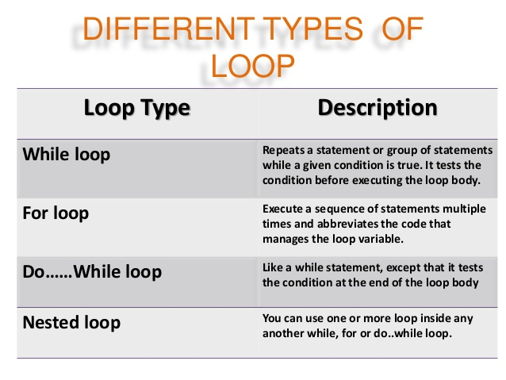

Loops cause program to execute the certain block of code repeatedly until test condition is false. Loops are used in performing repetitive task in programming. Consider these scenarios: You want to execute some code/s 100 times. You want to execute some code/s certain number of times depending upon input from user. These types of task can be solved in programming using loops.
 There are 3 types of loops in C programming: